Helping artists contribute to social impact
Impact
We raised 150 trees within 2 weeks of our launch, completely selling out and received over 20 art submissions.


Pictures from our first physical booth!
An experience built around how artists think and feel
Problem
Artists want to use their creativity for social good but currently there is no clear pathway for them to do that.

Artists feel like their art is not good enough to matter.
To understand the drivers and barriers for artist participation we conducted a user survey to explore their interests, behaviors, and past experiences. Through the 32 survey responses we received, we grouped the responses based on the common feelings of artists we could identify and came up with these 4 insights
I am not sure how much of an impact my art would have.
I don't think my art is very good, not sure if others would be interested.
I don't think my art is serious enough for something so important. I create for fun.
I create art to make my activities more enjoyable.
Market research
Every existing platform in the market felt either like a competition or unpaid freelance work.
I wanted to understand what current platforms are doing to solve this problem and evaluate their onboarding flows to see if they alienate artists. I used perplexity AI to run a competitive analysis

How might we support art hobbyists to easily participate in social impact work through their creative practice?

What if we create a platform where artists can feature their art as stickers for a certain fee, which directly funds social impact?
But attaching money to art, especially for a new platform would have created the same friction and feeling of unpaid freelance work. I knew that people are far less likely to act when there's no established relationship yet. We had no proof or credibility, no reason for an artist to pay and also create art when they could just donate directly.

I proposed flipping the model, free submissions for artists and everyone can purchase the stickers.
Before

After
Ideation
With the foundation set, I began exploring different submission flows to understand what the artists were already used to.
I looked at Ko-fi, Patreon, Pinterest, and Instagram - four platforms where artists share their work frequently to map what worked, what created friction, and what I needed to avoid.
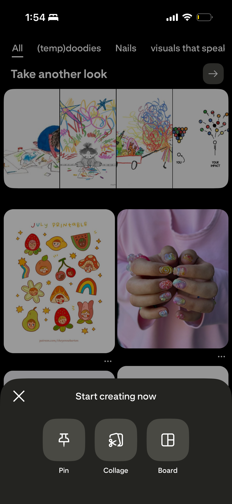
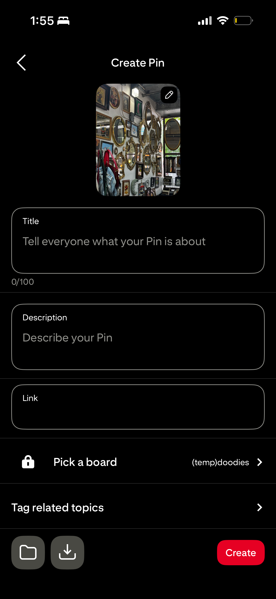
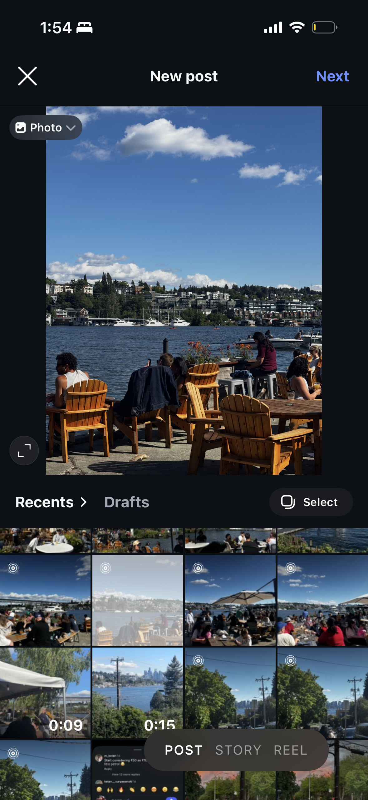
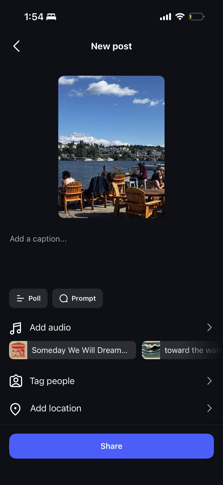
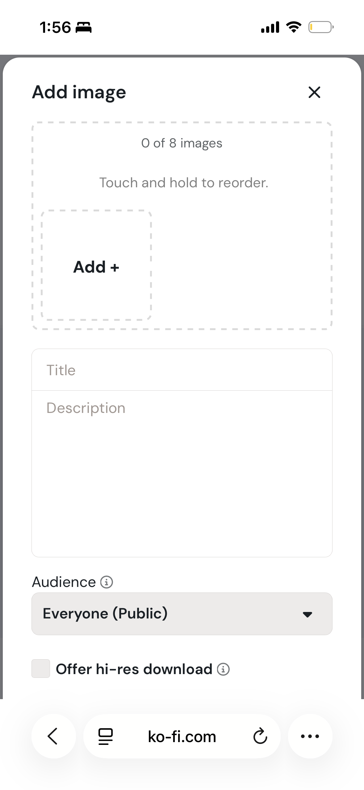
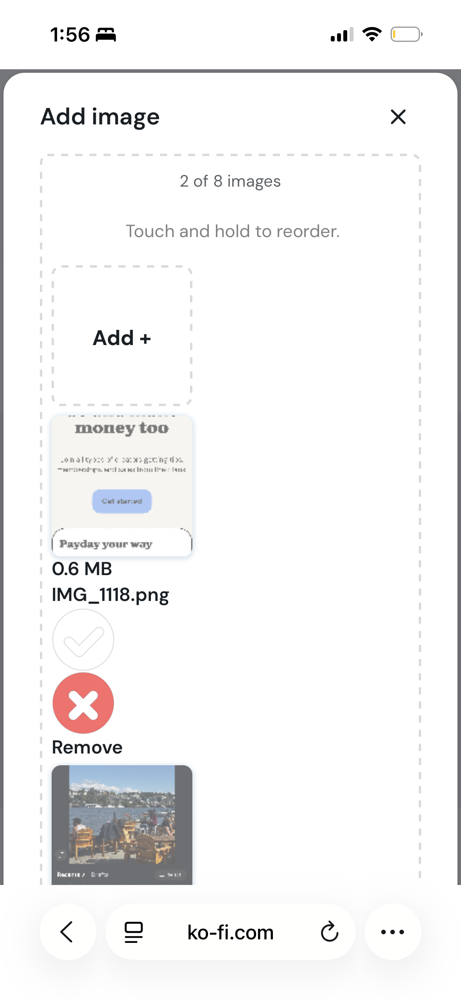
Kofi
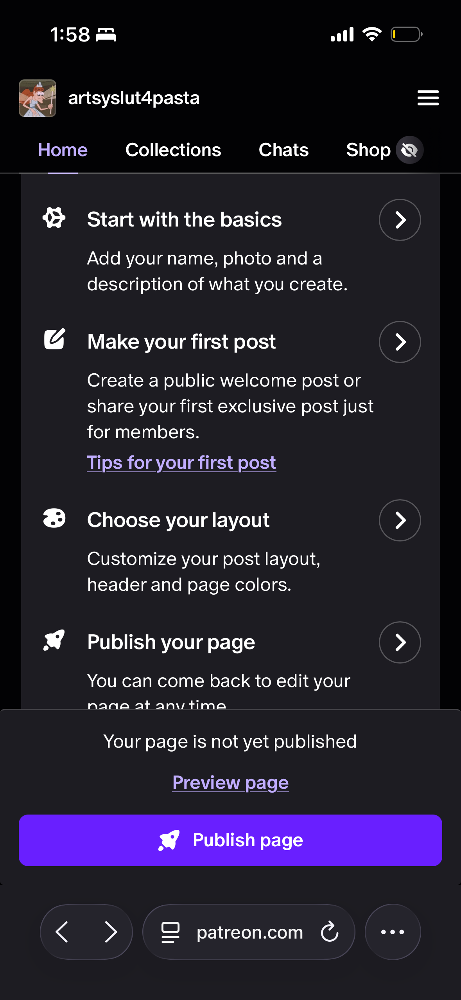
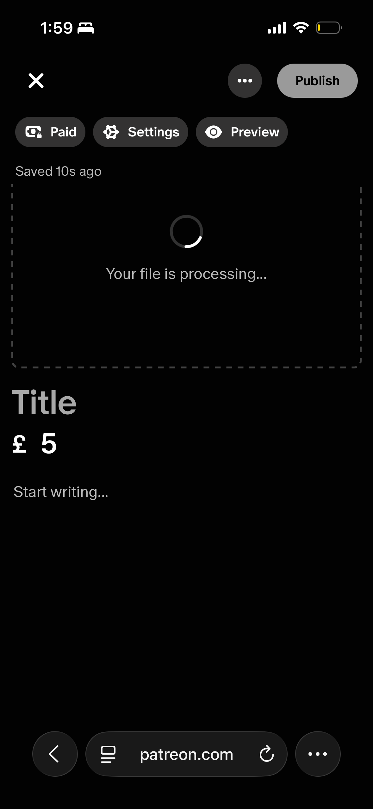
Patreon
01
Pinterest, Ko-fi, and Patreon all require signups before you can share or submit anything.
I wanted the platform to be low commitment. Artists should be able to contribute to social impact without having to download a new app or sign up for emails from one more platform.
02
Artists measure their works worth by engagement or the amount of likes and saves which most times takes the joy out of creating.
A lot of platforms make sharing art into a competition, the best work gets picked and is used by non-profits but art is subjective and everyone who wants to contribute should be able to.
Design Principles
Principles that guided my design
Based on the findings from research and my own exploration, I developed these three design principles to inform my design decisions.
Design for emotional safety and joy
Focus on belonging over participating
Reassure users that their contribution matters.
Design 01
Reducing Decisional Friction
Observation
Artists hate choosing their own work
Pre-launch, almost every artist sent multiple doodles and wanted us to choose what to sell.
Insight
Choosing triggers perfectionism.
Forcing one upload makes artists judge their own work, which might trigger decision anxiety.
Action
Multi - photo upload
Artists should be allowed to upload up to 5 photos so they don't have to pick their "best" work
Final Iteration
Multi-photo option to prevent decision friction

Unequal visual weight to signal filling all 5 is optional.
Iteration 1

Too much text. Users rarely read instructions
Multi-photo option is not obvious
Final stickers are circular, might lead to awk cropping.
Iteration 2

Pre-loaded stickers to make artist feel they are adding to the gallery but is confusing
Design 02
Designing for joy to reduce anxiety and emphasize the submission value.
The animation acts as a direct metaphor for the artist's impact on the social cause because without their art there would be no stickers to plant trees.
Design 03
Reducing input fatigue and errors
To reduce input fatigue, the email field automatically populates the moment a user types @ I also designed an interactive circular crop tool directly within the preview, allowing artists to scale and position their design with real-time visual proofing.
real-time visual proofing.

autofill email address
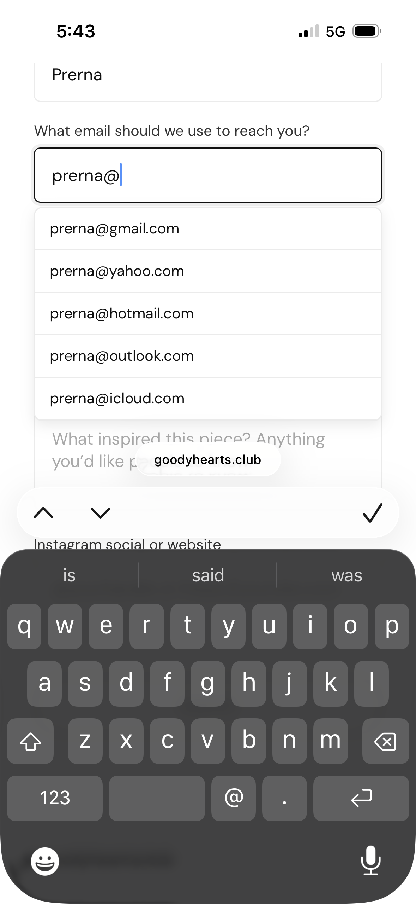
error prevention
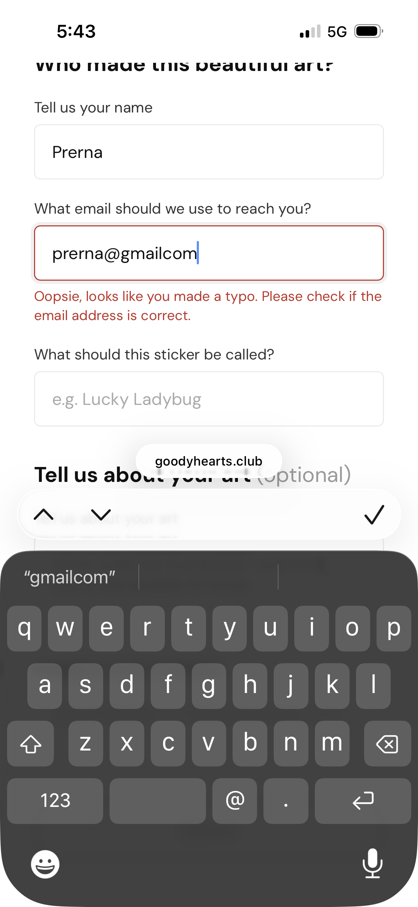
Usability Testing
Validating User Confidence, Reassurance, and Perceived Clarity.
To understand if there was a gap between my design intentions and real user perceptions, I ran 5 usability tests focusing on the emotional and cognitive experience of the artists. I wanted to understand how users felt navigating the platform.
01
Participants repeatedly tried clicking on existing community stickers in the gallery.
This behavior made me realize that people want to connect with the art and understand the story behind the design.
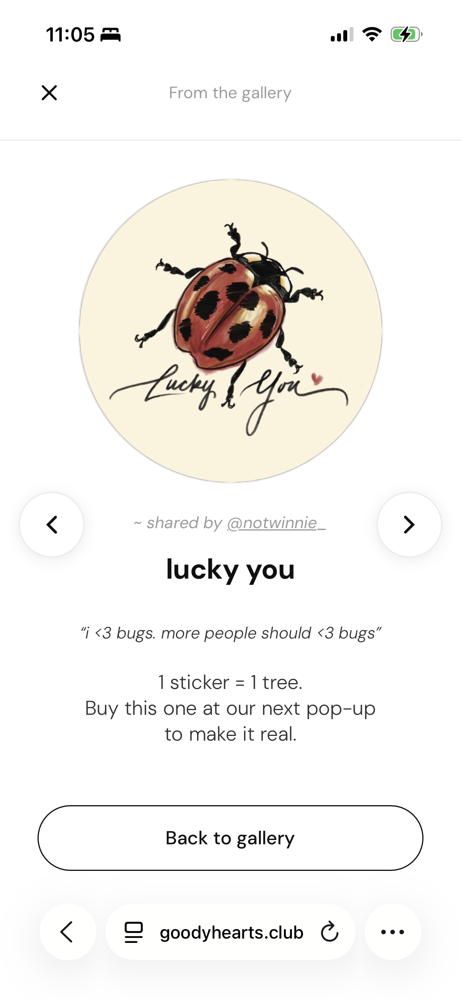
Made gallery art interactive to open into a bigger card and reveal more information about the artist.
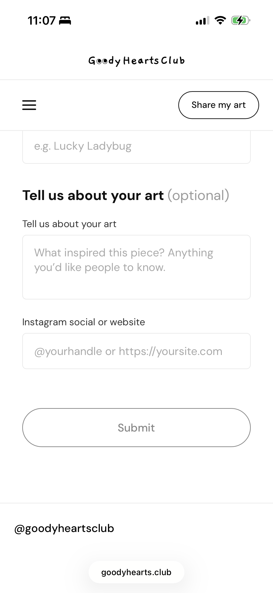
Added new form fields so artists can share their connection/story but made it optional to avoid forcing vulnerability
02
Do I need to add more drawings?
The empty placeholder slots on the personal details screen caused confusion. Instead of making it easier to add more art it made participants feel like they had made a mistake or needed to upload more artwork.
Before

After

Changed to show only uploaded art
AI Experiments
Claude can you build a UX copy?
To ensure the tone remained consistently empathetic, clear, and reassuring across every touchpoint of the experience, I used Claude to build a comprehensive UX Copy Documentation framework.

Reflection
My key takeaways.
Working with AI requires a LOT of patience
Because we had to design and launch this product on a brutally fast timeline, I initially turned to Claude to create wireframes which led to generic outputs, what did work was using it as a design review partner bec AI is really good at catching patterns/auditing. It taught me that you have to constantly experiment with AI workflows to figure out what actually accelerates your unique process and what just hinders it.
Human connection is essential
Stepping away from the screen to watch real people interact with our product was such an amazing experience. Seeing them connect with the non-profit's cause and buy the stickers filled me to so much joy. It reminded me that we are building tools that impact real human communities.